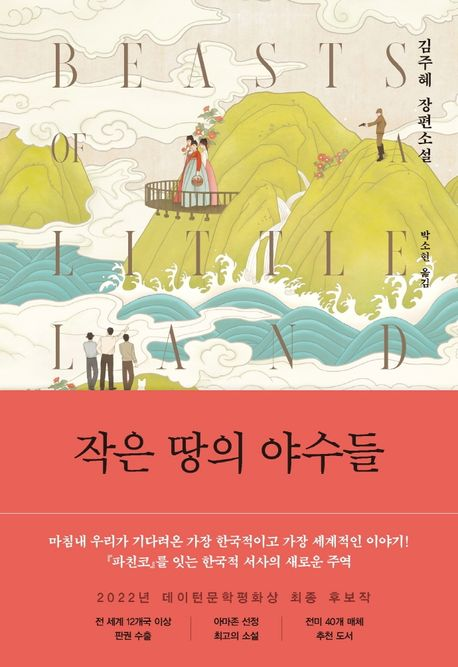

추천도서
부키만의 차별화된 AI추천 서비스가 당신의 취향에
딱 맞는 책을 엄선하여 골라드립니다.
추천도서
부키만의 차별화된 AI추천 서비스가 당신의 취향에
딱 맞는 책을 엄선하여 골라드립니다.
“작은 땅의 야수들”
김주혜 장편소설
마침내 우리가 기다려온 가장 한국적이고 가장 세계적인 이야기!『파친코』를 잇는 한국적 서사의 새로운 주역한국계 미국인 작가 김주혜의 놀라운 데뷔작
『작은 땅의 야수들』은 지난 수십 년간 이어져 왔던 대한민국의 독립 투쟁과 그 격동의 세월 속에 휘말려 살아갔던 사람들의 이야기다. 다양한 등장인물을 통해 인류를 하나로 묶어줄 사랑과 공감, 연민 등의 가치를 일깨운다. 김주혜 작가는 “단지 지금으로부터 백 년쯤 전, 여기서 멀리 떨어진 작은 땅에서 살았던 한국인들에 관한 이야기일 뿐 아니라, 전반적으로 인류 전체의 인간성에 관한 이야기라고 생각하며 썼다”고 말한 바 있다.
김구 선생을 도와 독립운동에 관여했던 외할아버지의 이야기를 어린 시절부터 듣고 자란 재미 작가의 첫 장편 데뷔작이 일제강점기 한국을 배경으로 하는 것은 어쩌면 필연적인 일이었을 것이다.폭넓은 서사와 호흡을 보여준다는 점에서 톨스토이의 작품을 연상케 하고, 일제강점기에 한국인이 겪었던 뒤틀린 운명을 그려낸다는 점에서 동시대를 배경으로 하는 『파친코』도 떠오른다.
대하소설을 좋아하는 독자, 절절한 사랑 이야기를 좋아하는 독자는 물론, 성별과 세대를 아울러 널리 읽힐 대작이다. 「기생충」을 시작으로 「파친코」까지 K-콘텐츠가 전 세계의 사랑을 받는 가운데 영어로 먼저 쓰인 ‘우리 이야기’를 본국에서 모국어로 출간한다는 점에서 의미가 깊다.